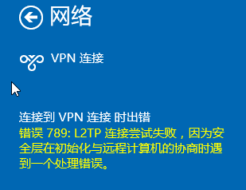

在 Monterey 系统中，L2TP/IPSec 的 VPN 能够连接上 VPN 服务器，但连接上后却不能访问网络，据说是苹果修改了 VPN 的加密方式导致的，可参考 VPN (L2TP over IPSec) stopped working after updating to Mac OS BigSur, does anyone have the same problem? 的讨论，在 Configuring L2TP VPN to use with iOS 14 and macOS Big Sur 中似乎给出了解决办法，但是需要修改 VPN 服务器端的配置，具体没有测试过，不知道行不行。
在 Monterey 中使用 L2TP/IPSec 的 VPN 的办法可以使用下面的这些方式:
- 尝试使用上面的解决办法:
- 需要修改 VPN 服务器 (得求人)
- 没测试过，不一定能行
- 服务器端开通 OpenVPN，Monterey 中使用 OpenVPN 进行连接
- 需要修改 VPN 服务器 (得求人)
- 安装虚拟机 + Windows，在其中使用 VPN
- 费钱
- 消耗系统资源
- 购买一个便宜的 Windows Server 云主机，在其中使用 VPN
- 费钱，但可以不多
由于现在不少云服务器商提供了很多便宜的云主机活动，例如某云的 2 核 4G 8M 网络的云主机 3 年才 222 块 (双 11 的时候更便宜)，于是买了一个安装了 Windows Server 2016，下面介绍在 Windows Server 里面使用 VPN 遇到的问题解决办法。
由于我的 Mac 是 ARM 的，有时候需要编译 X86 的程序，也正好用上。
连接 VPN
使用系统提供的 VPN 客户端，填写相关信息即可，然后点击连接。
例如填写:
1 | Server Address: 111.108.30.232 |
连接 VPN 的时候报错，需要调整客户端注册表
错误如图:

需要调整客户端注册表:
1 | REG ADD HKLM\SYSTEM\CurrentControlSet\Services\RasMan\Parameters /v ProhibitIpSec /t REG_DWORD /d 0x1 /f |
参考 腾讯云上 VPN 客户端注意事项 的【问题二】连 VPN 的时候报错，需要调整客户端注册表。
VPN 连上了，但是上不了外网了
参考 挂了 VPN 软件后本地网络变成受限，把 VPN 连接属性中的在远程网络上使用默认网关前面的勾取消。
VPN 连上了，但 VPN 网段不能访问
一般云主机的 Windows Server 中，不论你机器的 VPC 网段是啥，永久路由似乎是固定的，我们需要把 VPN 内网的 IP 添加到系统的路由中 (例如要使用 VPN 访问的内网 IP 有 192.168.1.73，一般其网段为 192.168.1.0):
- 在 VPN 连接的属性里找到 VPN Server 的 IP 如 192.168.3.10
- 删除路由信息:
route delete 192.168.1.0/24(如果有) - 添加路由信息:
route -p add 192.168.1.0 mask 255.255.255.0 192.168.3.10
所有发往 192.168.1.0/24 地址段的 IP 数据包，全部由 192.168.3.10 转发。
提示:
- 查看路由信息:
route print -4 - 不知道为啥，Windows Server 系统重启后即使路由表里有相关记录，但有时候需要删除路由信息，然后再添加一次才会生效
- 参考 腾讯云上 VPN 客户端注意事项 的【问题三】VPN 连上了、虚拟段设备也能访问了，但是上不了外网了，可参考下面文档解决
- 参考 route add 命令的主要作用是添加静态路由